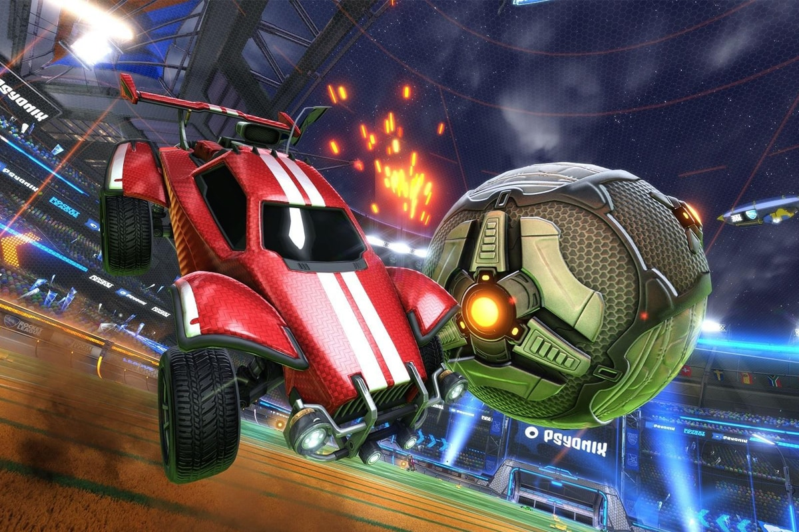
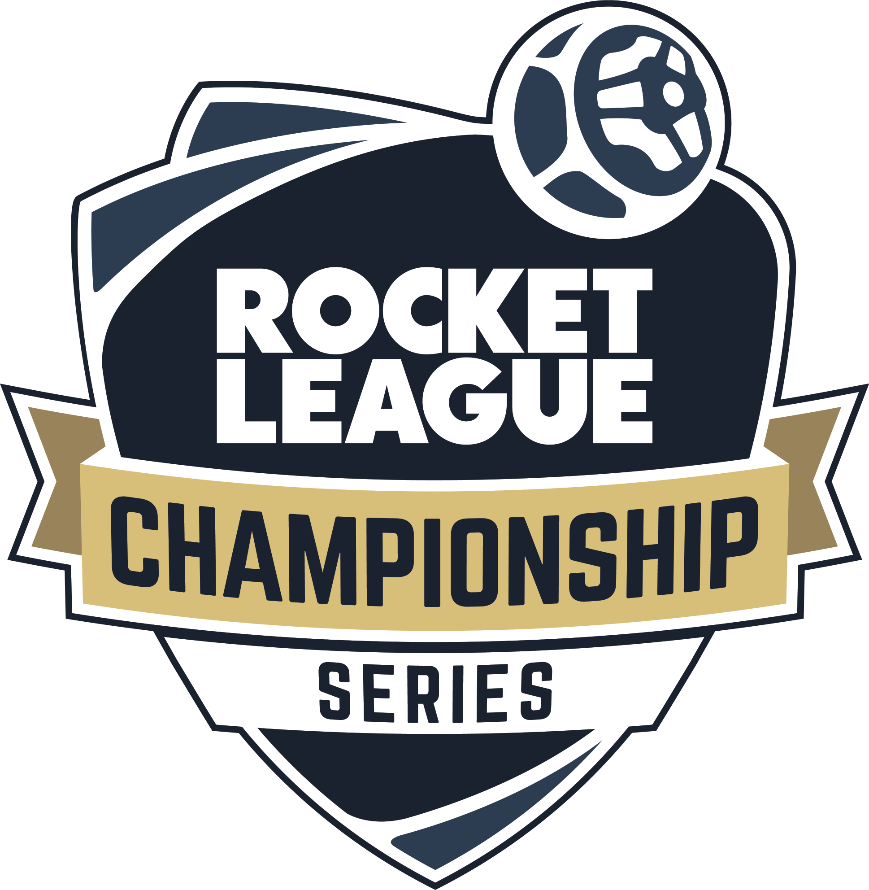
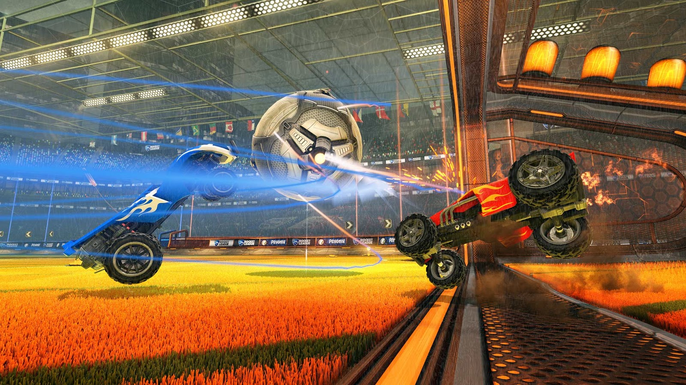

Rocket League™

Vad är Rocket League?
Rocket League är ett fordonsfotbollsvideospel utvecklat och publicerat av Psyonix. Spelet släpptes 2015 för Microsoft Windows och PlayStation 4, med portar för Xbox One och Nintendo Switch under de följande åren. I Rocket League kontrollerar spelarna raketdrivna bilar för att slå en boll in i motståndarlagets mål för att göra poäng, och kombinerar element av fotboll med höghastighetsfordon.
Varför är Rocket League så populärt?
Rocket League har fått kritikerros för sitt unika spelupplägg, fysikbaserade spelmekanik och tävlingsinriktade flerspelarlägen. Spelet har en stor och aktiv spelarbas, med regelbundna uppdateringar och nytt innehåll som läggs till av utvecklarna. Det har också blivit en populär e-sport, med professionella spelare och lag som tävlar i turneringar runt om i världen.


Vad tycker folk om Rocket League?
Sammantaget är Rocket League ett mycket underhållande och beroendeframkallande spel som har fått en hängiven fanskara och fortsätter att vara en viktig aktör i spelindustrin.